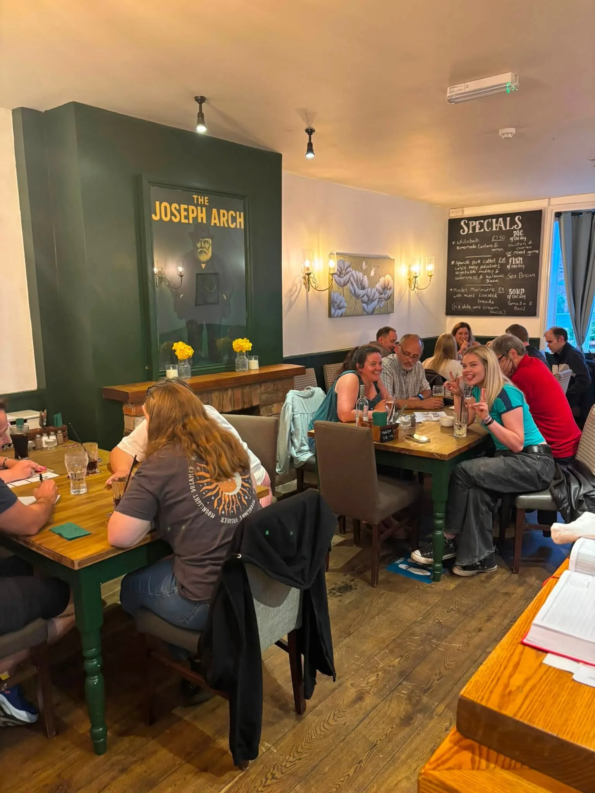
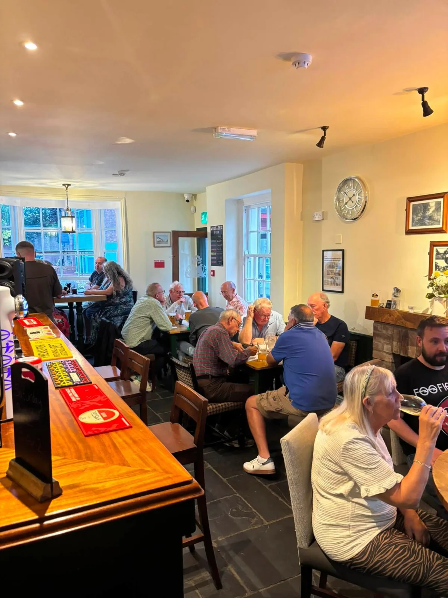

200 years of Joseph Arch
We gathered at the pub to celebrate 200 years since the birth of Joseph Arch, who was born here in Barford on 10 November 1826.

It's the people who make a pub. Come by for a catch-up, a proper pint and a little village life.
The heart of a good local is its community.
Since reopening in 2026, the Joseph Arch has welcomed neighbours, friends, families and visitors back through its doors.
Whether it's meeting someone for a drink, catching a match or staying for dinner, there's always a reason to drop in.
We gathered at the pub to celebrate 200 years since the birth of Joseph Arch, who was born here in Barford on 10 November 1826.

Follow us on Facebook for upcoming events, special offers and a look at what’s going on at The Joseph Arch.
FacebookFollow on FacebookFind us on Bridge Street, in the heart of Barford.